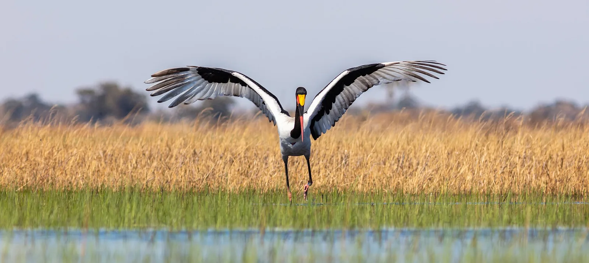

S10 · Sur
S10 · Süden
S10 · South
Delta del Okavango
Vi el Okavango, un río que no llega al mar porque se pierde en el desierto. De esa escasa agua viven elefantes e hipopótamos, y flores que nacen del barro.
Ich sah den Okavango, einen Fluss, der nie das Meer erreicht, weil er sich in der Wüste verliert. Von diesem wenigen Wasser leben Elefanten und Flusspferde, und Blumen, die aus dem Schlamm wachsen.
I saw the Okavango, a river that never reaches the sea because it loses itself in the desert. On that scarce water live elephants and hippos, and flowers born of the mud.
Información
El Okavango es un abanico aluvial en el noroeste de Botsuana: uno de los pocos deltas interiores grandes del mundo que no desemboca en ningún mar. Tiene unas 600.000 hectáreas de pantanos permanentes y hasta 1,2 millones más de pradera que se inunda por temporadas.
Su rareza es el calendario. La crecida anual del río Okavango llega durante la estación seca, y las plantas y los animales del delta sincronizaron sus ciclos biológicos con esa inundación a contramano.
Ahí viven algunas de las especies de grandes mamíferos más amenazadas del planeta: el guepardo, el rinoceronte blanco, el rinoceronte negro, el licaón y el león.
Information
El Okavango es un abanico aluvial en el noroeste de Botsuana: uno de los pocos deltas interiores grandes del mundo que no desemboca en ningún mar. Tiene unas 600.000 hectáreas de pantanos permanentes y hasta 1,2 millones más de pradera que se inunda por temporadas.
Su rareza es el calendario. La crecida anual del río Okavango llega durante la estación seca, y las plantas y los animales del delta sincronizaron sus ciclos biológicos con esa inundación a contramano.
Ahí viven algunas de las especies de grandes mamíferos más amenazadas del planeta: el guepardo, el rinoceronte blanco, el rinoceronte negro, el licaón y el león.
Information
El Okavango es un abanico aluvial en el noroeste de Botsuana: uno de los pocos deltas interiores grandes del mundo que no desemboca en ningún mar. Tiene unas 600.000 hectáreas de pantanos permanentes y hasta 1,2 millones más de pradera que se inunda por temporadas.
Su rareza es el calendario. La crecida anual del río Okavango llega durante la estación seca, y las plantas y los animales del delta sincronizaron sus ciclos biológicos con esa inundación a contramano.
Ahí viven algunas de las especies de grandes mamíferos más amenazadas del planeta: el guepardo, el rinoceronte blanco, el rinoceronte negro, el licaón y el león.
Vi elefantes morir junto a charcas que el calor volvió veneno, y máquinas buscando petróleo en el río que alimenta al Okavango.
Ich sah Elefanten neben Wasserlöchern sterben, die die Hitze zu Gift gemacht hatte, und Maschinen, die Öl suchen in dem Fluss, der den Okavango speist.
I saw elephants dying beside waterholes the heat had turned to poison, and machines looking for oil in the river that feeds the Okavango.
En 2020 murieron más de trescientos cincuenta elefantes en el delta del Okavango. Se los vio caminar en círculos antes de desplomarse. Un estudio que examinó tres mil charcas encontró que las que ese año tuvieron más floraciones de cianobacterias concentraban más cadáveres: el agua de la que bebían se había vuelto tóxica, en lo que los autores describen como un envenenamiento inducido por el clima.
Por otro lado, el Centro del Patrimonio Mundial sigue «con atención y preocupación» los proyectos de exploración de petróleo y gas de la empresa canadiense ReconAfrica en el noreste de Namibia y el noroeste de Botsuana. Las áreas con licencia no se superponen con el delta ni con su zona de amortiguación, pero están en sectores sensibles de la cuenca del Cubango-Okavango: una fuga o una contaminación llegaría igual, y la extracción de agua del río Kavango reduciría el caudal que alimenta al delta.
En 2020 murieron más de trescientos cincuenta elefantes en el delta del Okavango. Se los vio caminar en círculos antes de desplomarse. Un estudio que examinó tres mil charcas encontró que las que ese año tuvieron más floraciones de cianobacterias concentraban más cadáveres: el agua de la que bebían se había vuelto tóxica, en lo que los autores describen como un envenenamiento inducido por el clima.
Por otro lado, el Centro del Patrimonio Mundial sigue «con atención y preocupación» los proyectos de exploración de petróleo y gas de la empresa canadiense ReconAfrica en el noreste de Namibia y el noroeste de Botsuana. Las áreas con licencia no se superponen con el delta ni con su zona de amortiguación, pero están en sectores sensibles de la cuenca del Cubango-Okavango: una fuga o una contaminación llegaría igual, y la extracción de agua del río Kavango reduciría el caudal que alimenta al delta.
En 2020 murieron más de trescientos cincuenta elefantes en el delta del Okavango. Se los vio caminar en círculos antes de desplomarse. Un estudio que examinó tres mil charcas encontró que las que ese año tuvieron más floraciones de cianobacterias concentraban más cadáveres: el agua de la que bebían se había vuelto tóxica, en lo que los autores describen como un envenenamiento inducido por el clima.
Por otro lado, el Centro del Patrimonio Mundial sigue «con atención y preocupación» los proyectos de exploración de petróleo y gas de la empresa canadiense ReconAfrica en el noreste de Namibia y el noroeste de Botsuana. Las áreas con licencia no se superponen con el delta ni con su zona de amortiguación, pero están en sectores sensibles de la cuenca del Cubango-Okavango: una fuga o una contaminación llegaría igual, y la extracción de agua del río Kavango reduciría el caudal que alimenta al delta.
Galería
Galerie
Gallery


Fuentes
Quellen
Sources
- UNESCO, Centro del Patrimonio Mundial, Okavango Delta — https://whc.unesco.org/en/list/1432/ consultado 2026-10-05abgerufen 2026-10-05accessed 2026-10-05
- Nature, Toxic bacteria caused the mysterious deaths of hundreds of African elephants — https://www.nature.com/articles/d41586-020-02703-9 consultado 2026-10-06abgerufen 2026-10-06accessed 2026-10-06
- UNESCO, Centro del Patrimonio Mundial, UNESCO vigilant on potential impacts of oil exploration in Namibia and Botswana on World Heritage properties — https://whc.unesco.org/en/news/2230 consultado 2026-10-06abgerufen 2026-10-06accessed 2026-10-06
- UNESCO, Centro del Patrimonio Mundial, Estado de conservación 2023: Okavango Delta (Botsuana) — https://whc.unesco.org/en/soc/4322/ consultado 2026-10-06abgerufen 2026-10-06accessed 2026-10-06